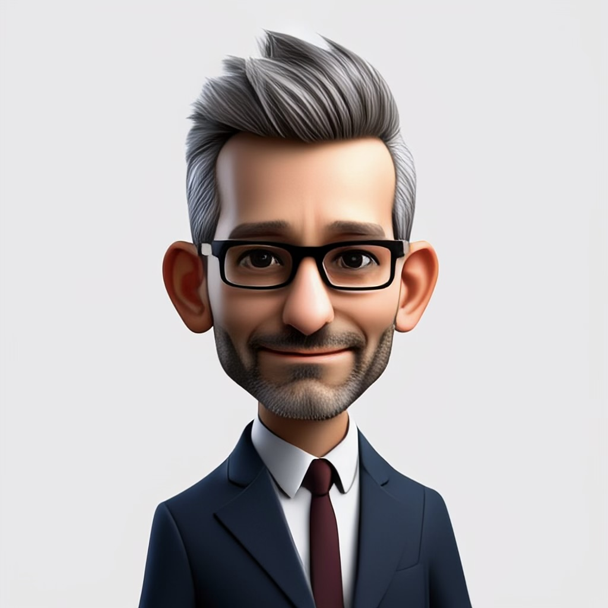

Über mich
Geboren in (Ost-)Berlin, habe ich mir mit über 30 Jahren als Investmentprofi meinen selbstfinanzierten Ruhestand in der Natur Georgiens erarbeitet. Vegan und ungeimpft lebe ich ein Leben der Unabhängigkeit, geleitet von meinem Motto: Freiheit und Abenteuer. „Anatomie des Staates“ von Murray Rothbard inspiriert meinen freien Geist, während  itcoin die Lösung für alles ist.
itcoin die Lösung für alles ist.
Eine skurrile Einladung
Stell dir vor: Ein ehemaliger Investmentzauberer, nun in den Bergen Georgiens verschanzt, öffnet die Türen zu einer Allumfänglichen Kompetenz – ein buntes Sammelsurium aus Weisheit, Witz und wildem Denken. Keine Jobsuche, nur ein zwinkernder Ruf: Hast du eine Frage, die nur ein exzentrischer Geist beantworten kann? Dann lass uns plaudern – wer weiß, welches Abenteuer daraus erwächst!
Kontakt aufnehmenMein Portfolio
Hier sind meine Lieblingsprojekte – klein und fein. Natürlich wird’s noch erweitert...